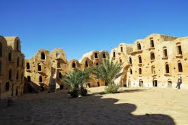

Ksar Ouled Soltane
Le Ksar Ouled Soltane est l'un des ksour les mieux préservés de Tunisie. Ses ghorfas (greniers fortifiés) empilées sur quatre étages forment une architecture spectaculaire. Ce lieu emblématique a servi de décor pour plusieurs films dont Star Wars.